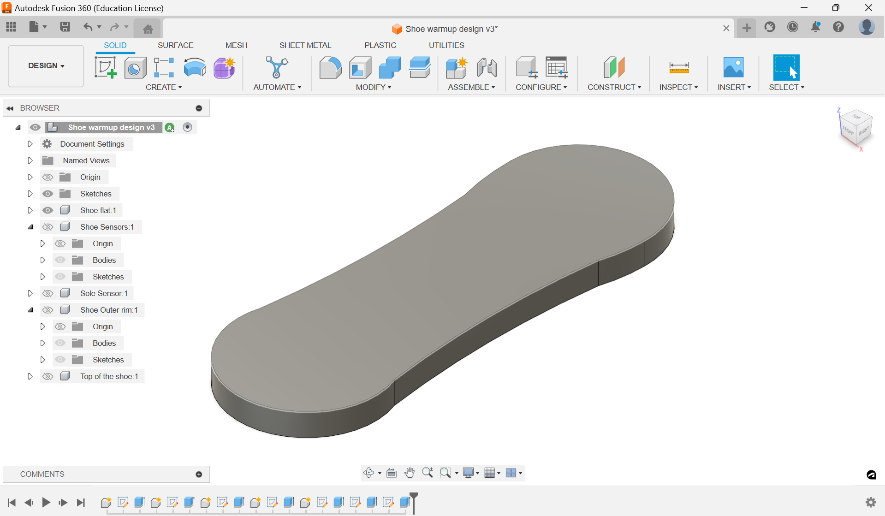
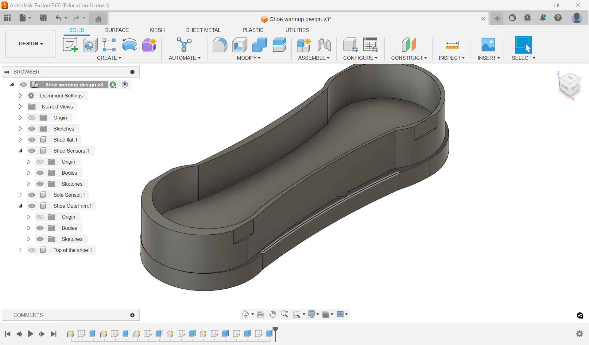
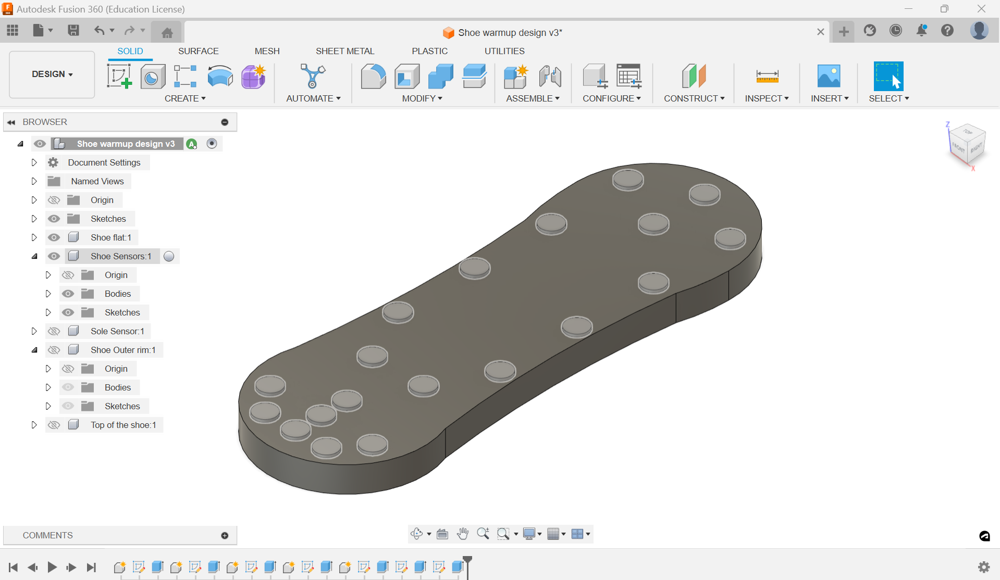
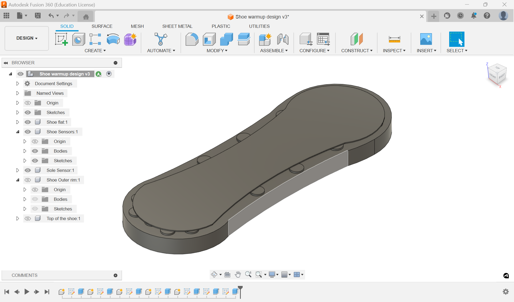
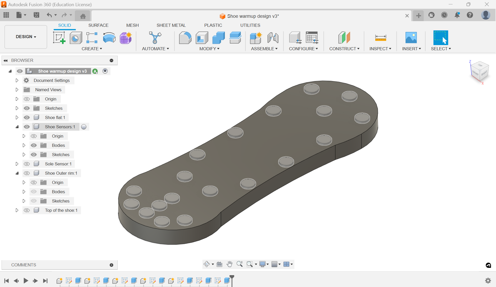
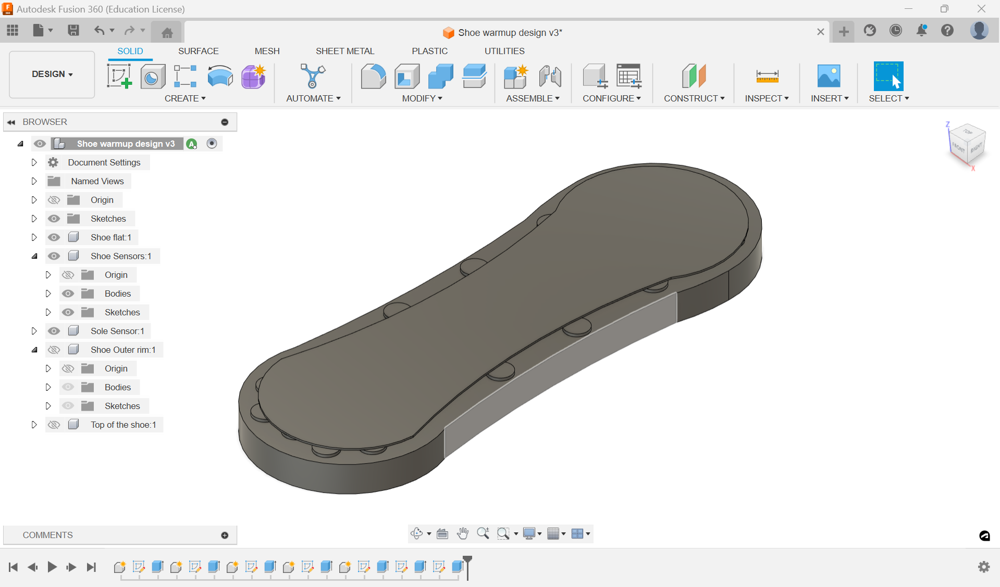

Vinyl Cutter
The vinyl cutter allows for the creation of stickers with multiple colors and layers. My design was a replica of the old Miami Dolphins logo. I am a big fan of the team, and of the multiple throwback items.


Rough Design
The CAd-deisgn is a very rough deisgn trying to imiate a shoe on the program Fusion-360. Using non-excat dimensions you have to first create a base for the shoe by drawing on the bottom plane and then extruding it. Next do circles which are the placeholder for the sensors on top of the base by drawing on it and then extruding. Next do the sole over the sensors through the same method, but on the sensors. The sides of the shoe are going to be created by drawing on the base around the sole and sensors and then extruding it. While drawing, make one corner in the front a box so it can be used to draw on next. Draw a rectnagular cover over the sides and extrude. When you finLLY draw on the box on the side, draw an an arch the shoe, so you can curve the shoe by eliminating part of the top. Finbally extrude a giant hole ontop open the shoe on 1 side. I chose fusion for this cad design due to my profiency in the too. In addtion, the porgram basis many of its's complex designs off simple basic shapes. This allows a person to make a rough cad, and then later build more off it.
  

>


>